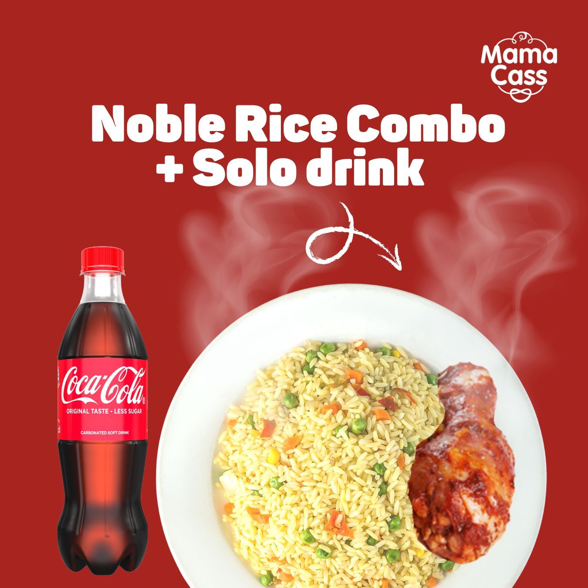
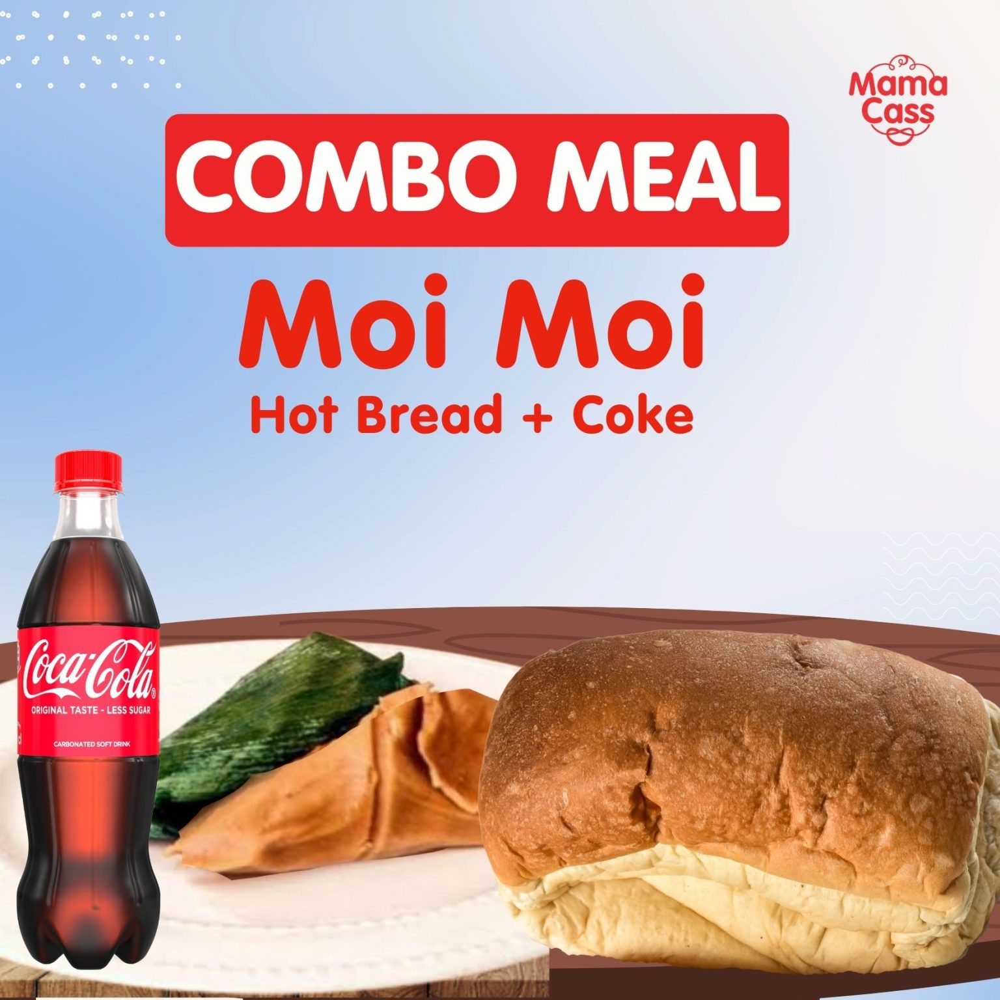
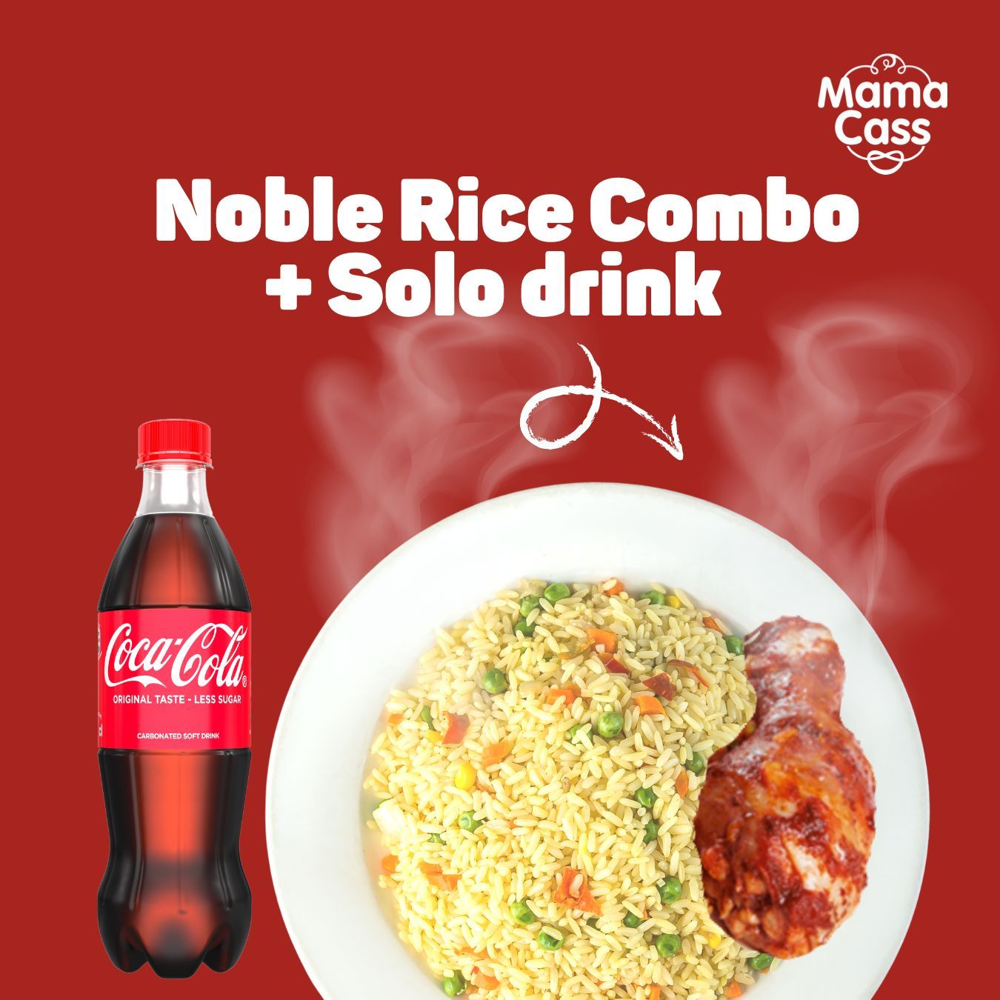
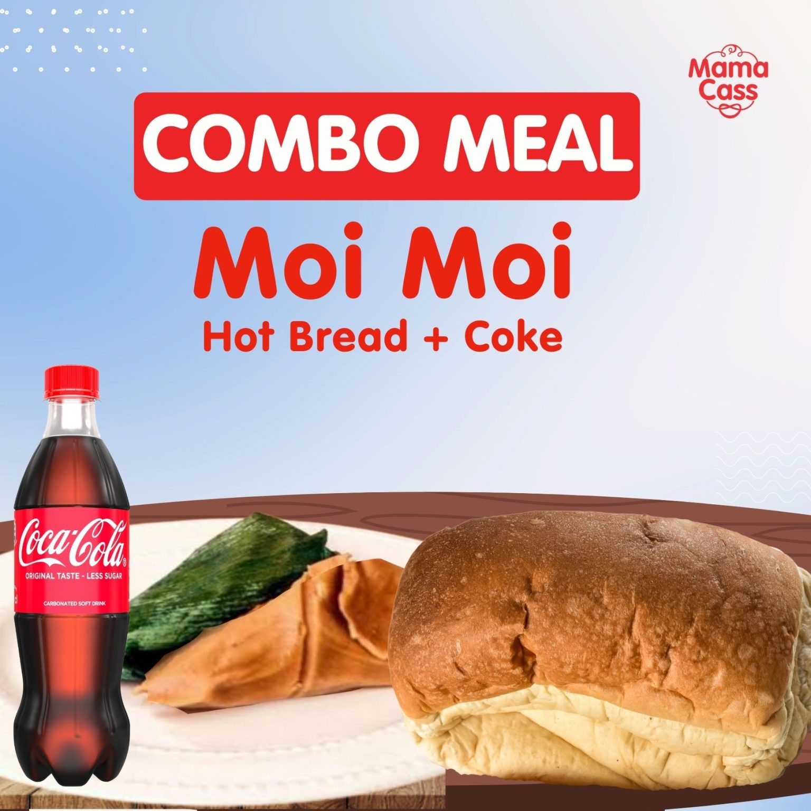
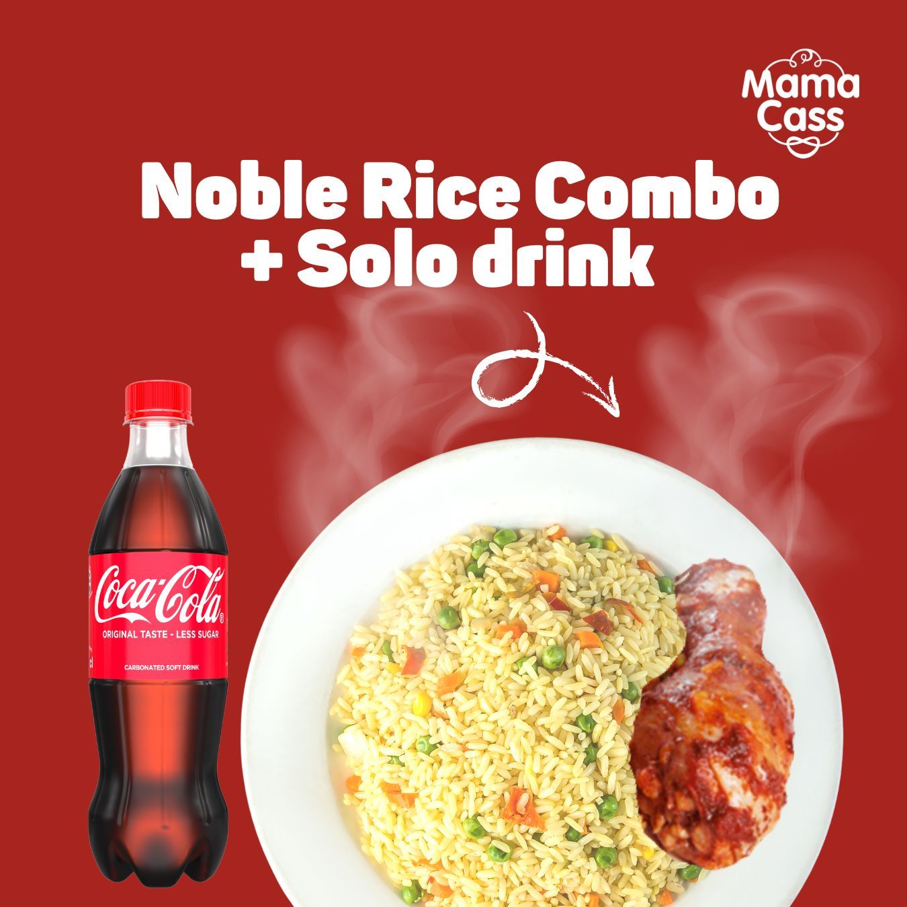
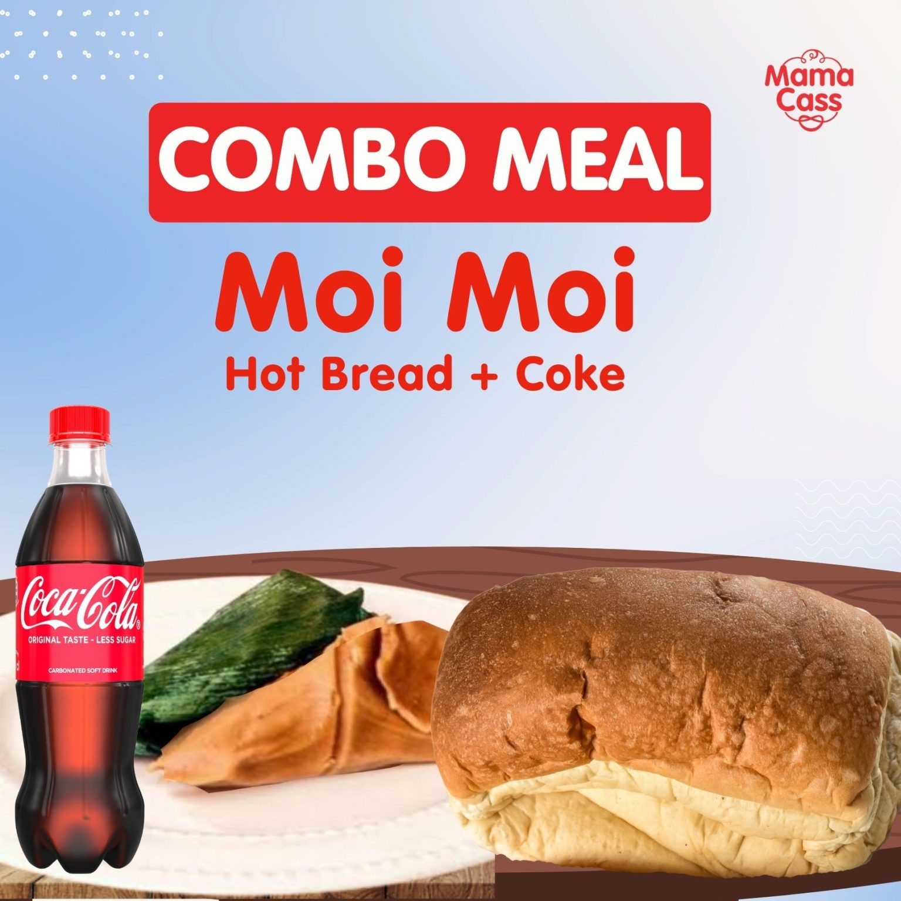

A well-designed food table is essential for efficient restaurant operation and customer satisfaction. It ensures that customers can easily navigate their options, understand what they are ordering, and feel confident about their choices. Additionally, it aids the staff by streamlining the order-taking process and reducing the likelihood of misunderstandings. Overall, the food table is more than just a menu; it is a strategic tool that enhances the dining experience, promotes the restaurant's offerings, and contributes to operational efficiency.
A food table, often seen in restaurants, is a comprehensive list or menu that displays the variety of dishes offered. It serves as a crucial tool for both the restaurant staff and customers, fulfilling several important functions:
.Dish Names and Descriptions: Lists all available dishes, often with descriptions to inform customers about the ingredients and preparation methods.
.Pricing: Shows the prices for each item, helping customers make informed decisions based on their budget
Course Segmentation: Divides dishes into categories such as appetizers, main courses, desserts, and beverages.

